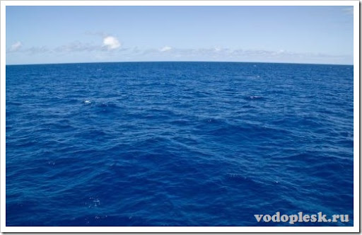

Южный океан
Южный океан
Ю́жный океа́н (устар. Южный ледовитый океан[1]) — наименование совокупности южных частей Тихого, Атлантического и Индийского океанов, окружающих Антарктиду[2] и нередко выделяемых как «пятый океан», не имеющий, однако, чётко очерченной островами и континентами северной границы. Площадь Южного океана можно определять по океанологическому признаку: как линию схождения холодных антарктических течений с более тёплыми водами трёх океанов. Но такая граница постоянно меняет своё положение и зависит от сезона, поэтому неудобна для практических целей. В 2000 году государства — члены Международной гидрографической организации приняли решение выделять Южный океан как самостоятельный пятый океан, соединяющий в себе южные части Атлантического, Индийского и Тихого океанов, в пределах, ограниченных с севера 60-й параллелью южной широты, а также ограничиваемых Договором об Антарктике[3]. Принятая площадь Южного океана 20,327 млн км² (между побережьем Антарктиды и 60-й параллелью южной широты)[3].
Наибольшая глубина океана лежит в Южно-Сандвичевом жёлобе и составляет 8264 м[3]. Средняя глубина — 3270 м[4]. Длина береговой линии — 17 968 км[4].
По состоянию на 1978 год во всех русскоязычных практических морских пособиях (морские навигационные карты, лоции, огни и знаки и т. д.) понятие «Южный океан» отсутствовало, термин среди мореплавателей не употреблялся[2].
С конца XX века Южный океан подписывается на картах и в атласах, изданных Роскартографией. В частности, он подписан в 3-м издании фундаментального Атласа мира и в других атласах, изданных уже в XXI веке[5].